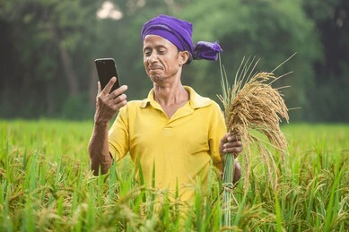

"स्मार्ट फार्मर इन्फॉर्मेशन एंड एडवाइजरी सिस्टम (Smart Farmer Information & Advisory System) एक उपयोग
में आसान (यूज़र-फ्रेंडली) प्लेटफॉर्म है, जिसे किसानों को एक ही जगह पर सभी जरूरी कृषि जानकारी देकर उनकी
मदद करने के लिए बनाया गया है।
हमारा लक्ष्य फसल की जानकारी, उर्वरक (खाद) के सुझावों, मौसम के अपडेट और AI-आधारित वॉइस असिस्टेंट के
माध्यम से किसानों को सही और सटीक निर्णय लेने में मदद करना है।
इस प्लेटफॉर्म को इस तरह से डिज़ाइन किया गया है कि यह हर एक किसान के लिए एकदम सरल, सुलभ और इस्तेमाल करने
में बहुत ही आसान हो।"